When you ate dinner late, you had a bad night more often
ExampleWorth keeping an eye onYou had a bad night after 6 of your 9 late dinners, but after only 2 of your 11 earlier dinners.
Tumlii is a simple diary for your tummy. Note down what you eat, how you slept and how your tummy felt. Over time, Tumlii looks back over your days and shows you what your bad tummy days have in common.
It only takes a few taps a day. Tumlii does the rest.
Tap to note a meal, or how your tummy feels, even in the middle of the night. Forgot something? That's fine. Tumlii never fills it in for you.
It puts days when you did something, like eating late, next to days when you didn't. Then it counts how your tummy was on each.
Tumlii shows you what your bad tummy days seem to have in common. If it can't tell yet, it simply says so.
Real screens from the app, with example data. Here's what each part can do for you.
Right after a meal, or at 2 in the morning: tap what you ate, how big the portion was, and how your tummy feels. Pick from everyday dishes, or type your own in any language and Tumlii remembers it for next time.
A few taps, even on a rough night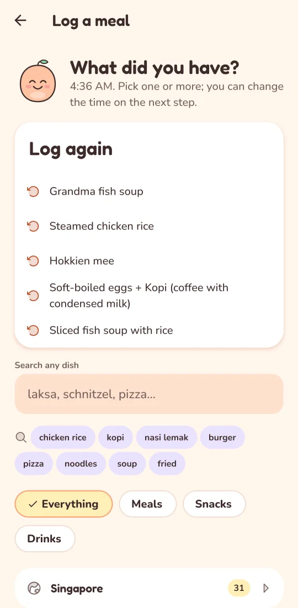
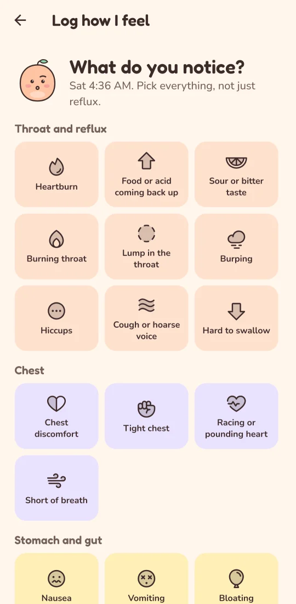
Tumlii puts your days side by side and counts. It shows the few things that stand out for you, with the numbers behind each one, so you can decide what's worth trying. If it can't tell yet, it says so.
Your hunches, checked against your own days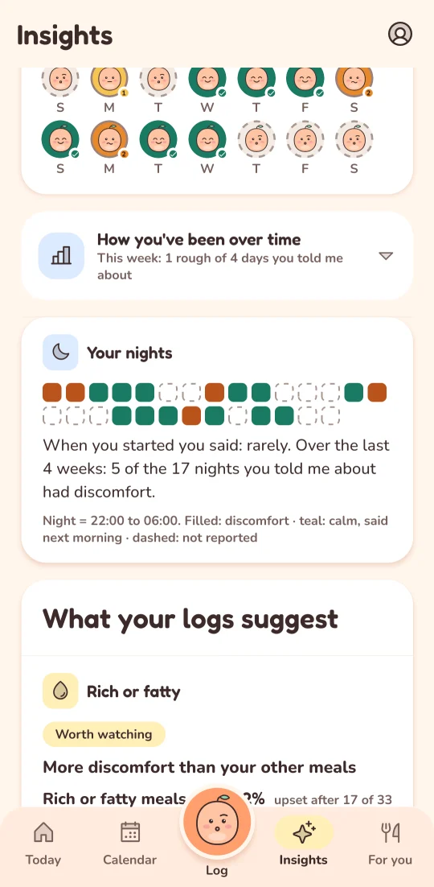
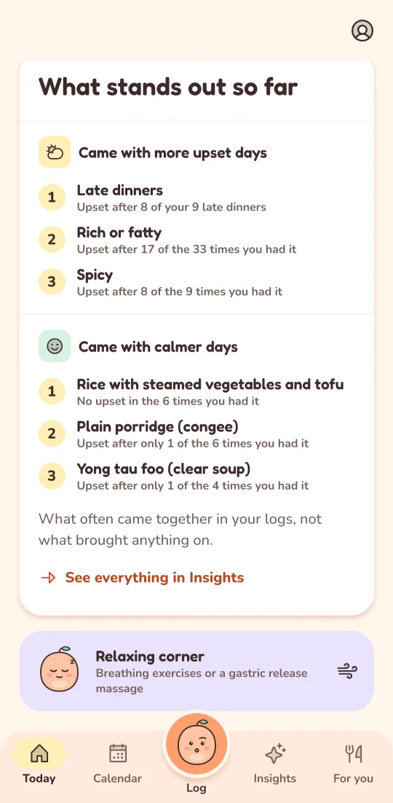
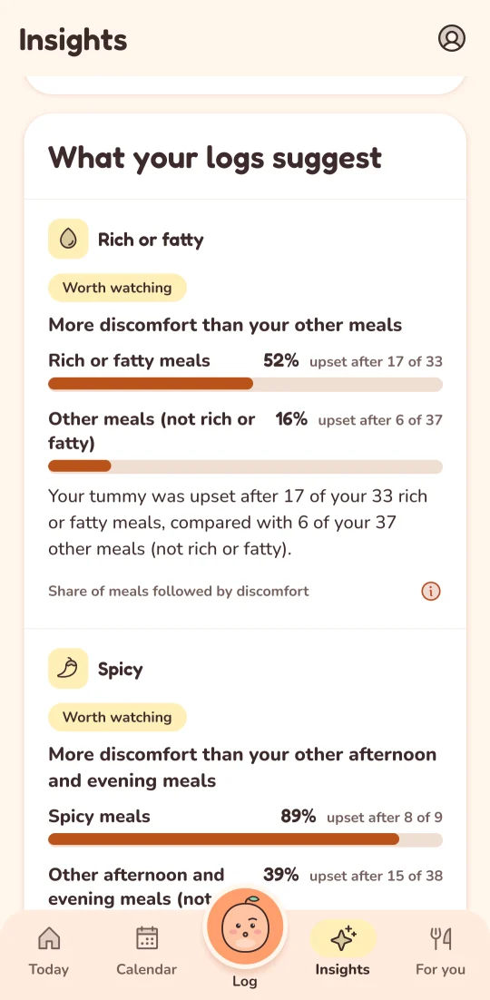
Tap a question like “Tell me about myself” and Tumlii answers in plain words from your own notes, including stress, sleep and exercise when they stand out. Or tap a Good to know question, like “What is FODMAP?” or “Why wait 3 hours to lie down?” Each answer is written from a published study, links to it, and adds what your own logs show.
Answers that show their sources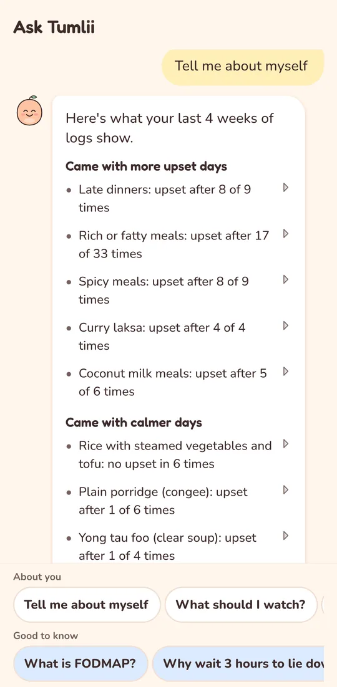
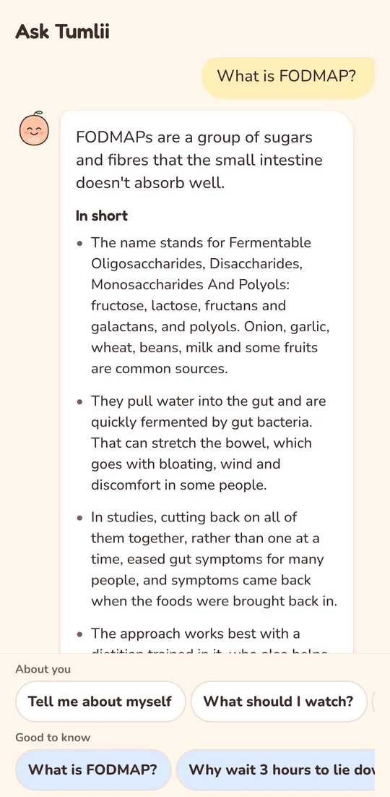
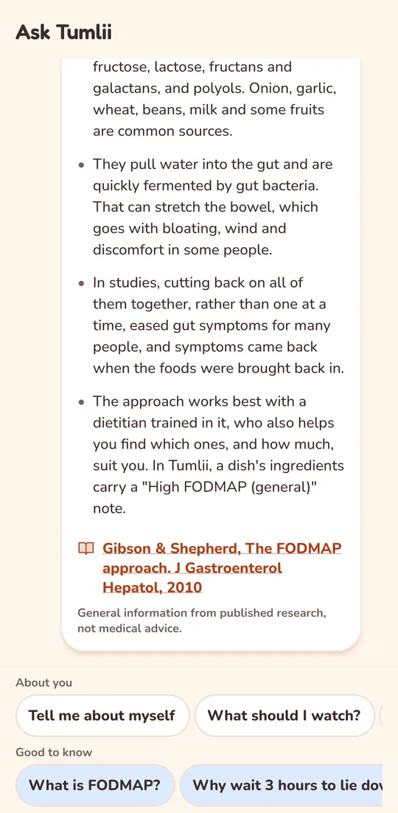
When something stands out, Tumlii can suggest one small change, like finishing dinner earlier. Start a two-week try with one tap. Afterwards, Tumlii puts those two weeks next to the two before, so you can see how they compared.
Small changes, checked fairly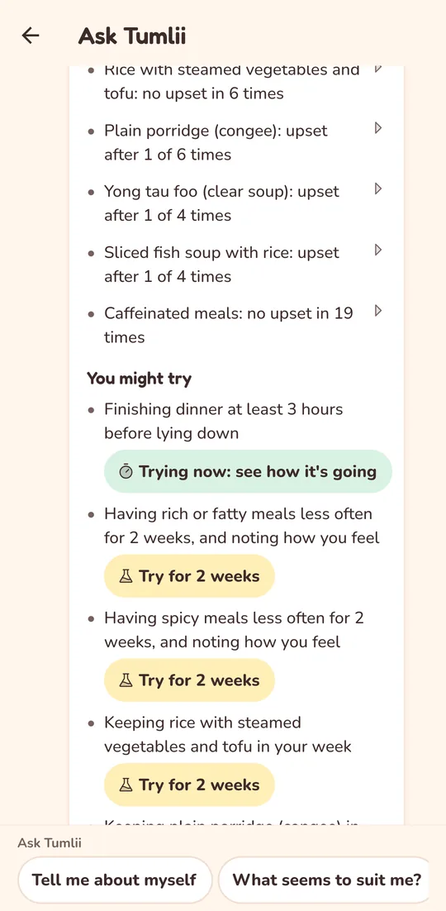
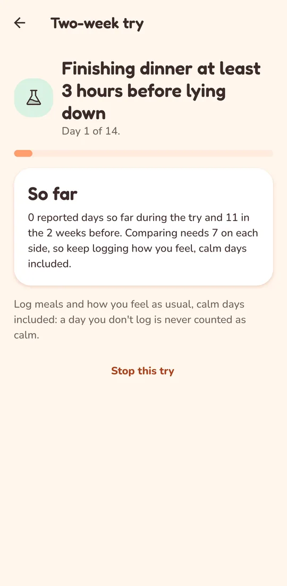
Calm days count too. Every few weeks Tumlii gathers your calm days and shows what you ate, how you slept and how you felt on them, next to your harder days. Your month sits on one page.
More of what your calm days had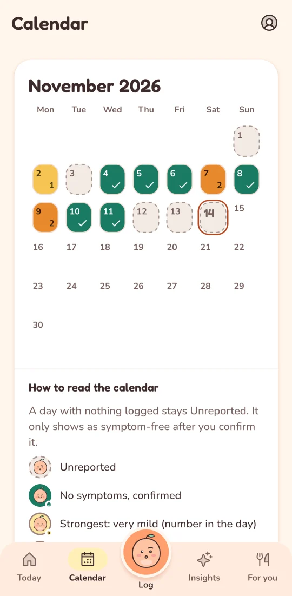
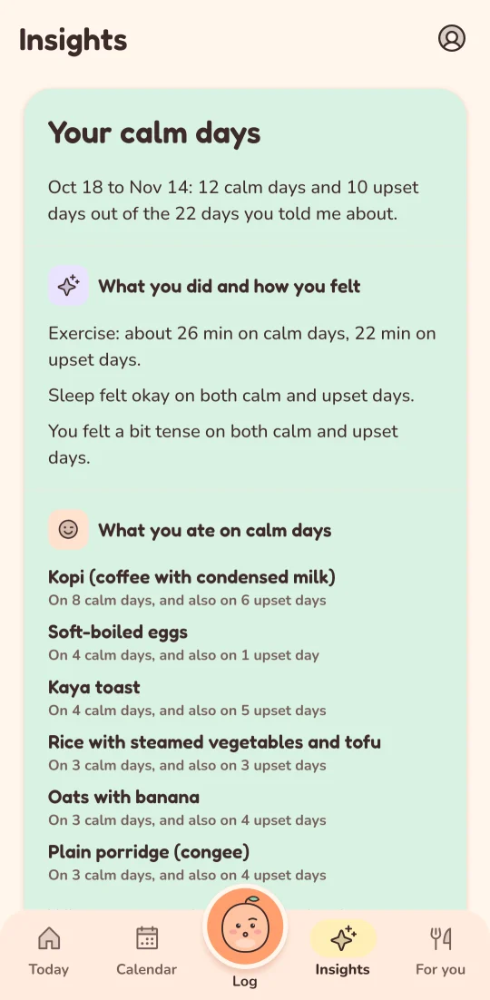
Meal ideas start with what has gone well for you, across many cuisines, and always respect your allergies and food rules. Ask for more of what you like. Checked a dish yourself? Your say comes first.
Fewer guesses at mealtimes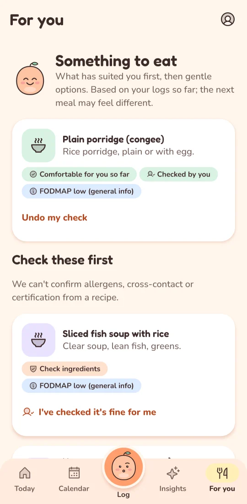
Open any dish to see what’s usually in it, which ingredients are often high in FODMAP, and how your own meals with it went. Tap an ingredient for gentle swap ideas, then note the dish down with your swaps.
Swaps you choose, not rules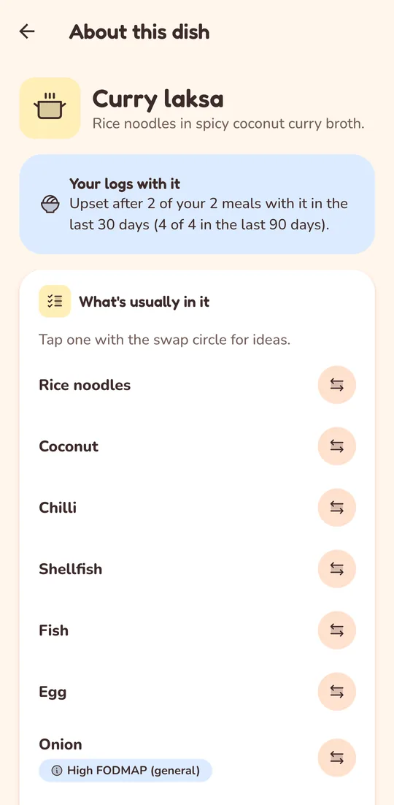
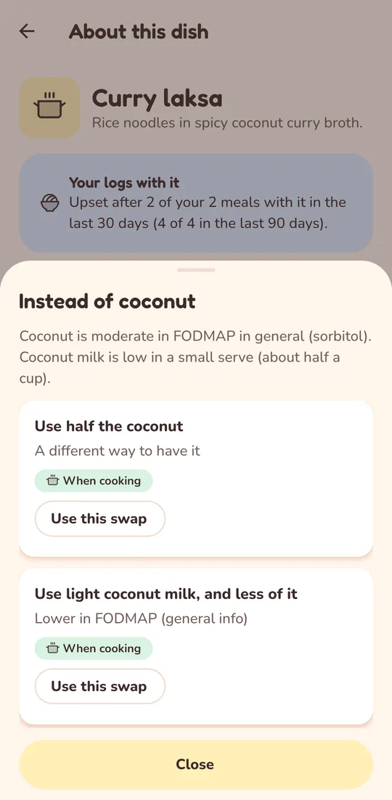
Tumlii can ring after you eat: when it’s okay to lie down, a good time for a walk, or a nudge at your usual mealtimes asking if you’ve eaten. You choose the times and the sound.
Reminders that fit your day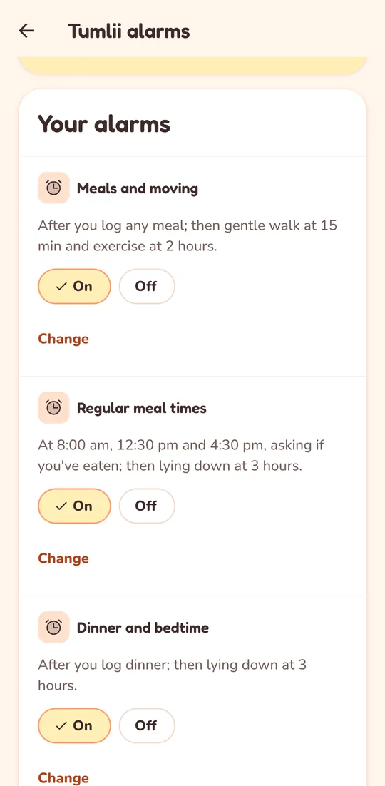
Short guided breathing and self-massage you can follow along with, one step at a time. Afterwards, Tumlii can show whether your calmer days came with them.
A breather when stress builds up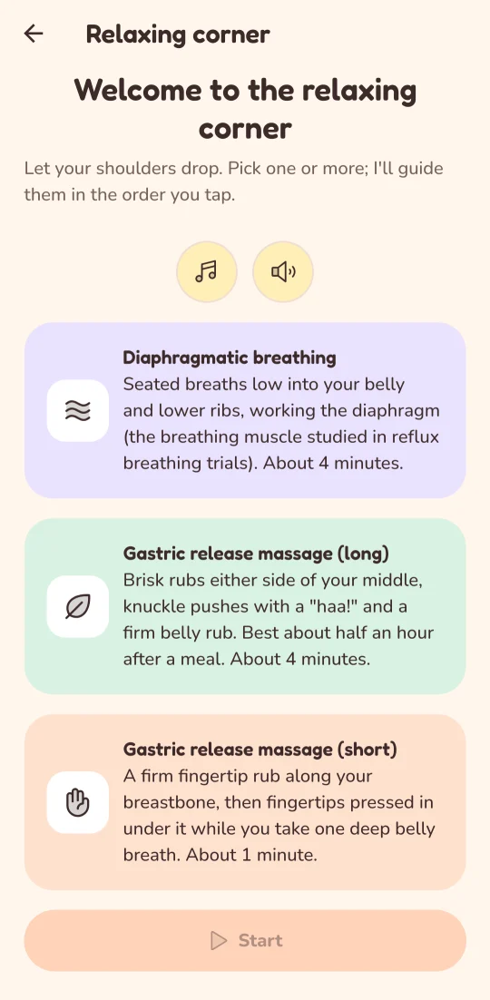
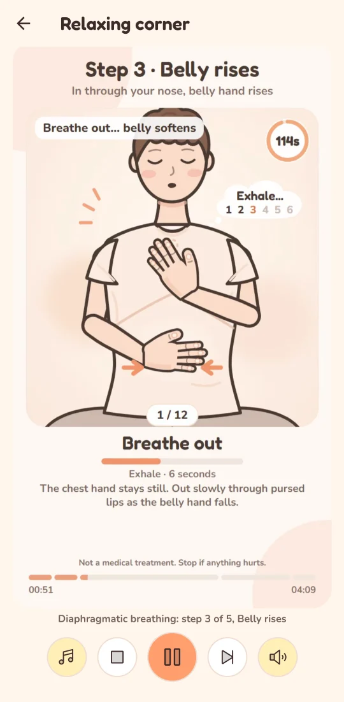
Tumlii only tells you what your own notes show. It never guesses.
Tumlii says things like "these often go together". It never tells you what is wrong, and never calls a food good or bad.
If you didn't note a day down, Tumlii doesn't count it as a good day.
Each result shows how many days it is based on, so you can decide for yourself.
Your notes are kept locked (encrypted) on your phone. Backups are files you keep yourself.
Allergies, religious and diet rules are checked before anything else, and your history never overrides them.
If a food that once stood out keeps going fine for you, Tumlii stops calling it worth watching.
Quiet extras that make the diary fit your life.
A big plate and a small one aren’t the same. Tumlii looks at whether larger or smaller portions go with rougher days for you.
Work shifts or eat late? Set when your breakfast, lunch and dinner usually happen.
Connect Health Connect on Android or Apple Health on iPhone. Tumlii only reads sleep, workouts and weight.
Make a short PDF of what you noted down and what stood out, to take to an appointment. Or export everything as a spreadsheet.
A day and a night look, and big buttons for 2 am. Larger text from your phone’s settings is respected.
The first time you open each part of the app, a quick tour points out what’s where. Skip it any time.
Sign up for early access now. When the early release opens, we'll email you a link to download Tumlii, and you'll set your password in the app.
No. Tumlii is a diary. It helps you spot patterns in your own days. It does not diagnose illness, and it does not replace your doctor.
No. Tumlii and the people who make it are not doctors, dietitians, nutritionists or food-safety experts, and we don't claim to be. What Tumlii shows about food, nutrition, FODMAPs, allergens, pregnancy and food safety is general information from the published sources below. It may not fit you, so check labels and ingredients yourself, and follow your doctor's, dietitian's or midwife's advice first.
It depends on how often you note things down. If Tumlii doesn't have enough days yet, it tells you, instead of guessing.
Patterns and answers about you come only from what you've noted down. Everything else is general information from published sources:
None of this is medical advice.
On your phone, locked (encrypted). Tumlii never sends your diary anywhere unless you turn on cloud backup, which keeps one encrypted copy so it comes back on a new phone. If you choose to share a recipe or routine, or to count toward “you’re not alone”, only that reaches our server, without your name, and you can take it back. You can save a backup file and keep it wherever you like. More in our privacy policy.
Yes, if you want it to. On Android, Tumlii can read sleep, workouts and weight from Health Connect. On iPhone, it reads the same from Apple Health. It never writes anything back.
The early release comes to Android phones in December 2026 and to iPhone in January 2027. Leave your email at the top of this page, and we'll send you one email when it's ready for your phone.